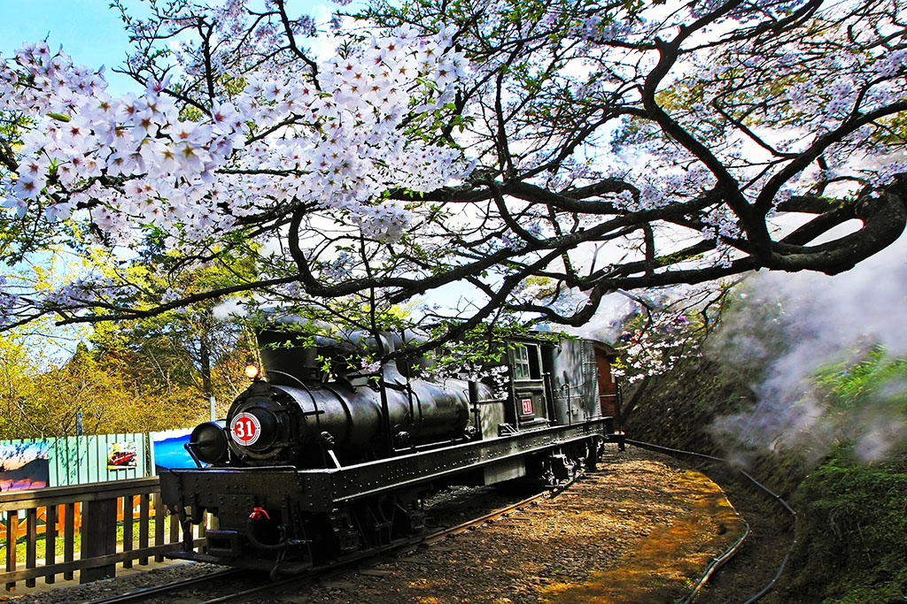

阿里山森林鐵路
西元1899年，日本人為轉運木材而規劃興建阿里山鐵路，軌距762毫米，最大坡度6.25%，最小曲率半徑40公尺。西元1912年，長達66.6公里的嘉義至二萬坪段宣布通車，西元1914年，再延長至阿里山並逐漸增設支線，總長71.4公里。全線自海拔30公尺的嘉義，一路爬升至2,216公尺高的阿里山，全程經過47個隧道、72座橋，沿途可欣賞熱、暖、溫等不同森林帶之植物種類變化與美麗的山脈、溪谷。阿里山森林鐵路分為平地與山地兩線段，前者指嘉義至竹崎（14.2公里），後者為竹崎至阿里山線段（57.2公里）。當火車以推進方式運轉至獨立山時，為遷就急峻的山形，則須以螺旋型環繞獨立山三周（約五公里長、兩百公尺高）而至山頂。當迴旋上山時，在車上可三度看到忽左忽右的樟腦寮車站仍在山下，然後鐵道再以8字型方式離開獨立山。而自屏遮那站到第一分道後，鐵路呈Z字型曲折前進，經過三個分道時，火車時而往前拖、時而在後推，終抵阿里山，故有「阿里山火車碰壁」之稱。